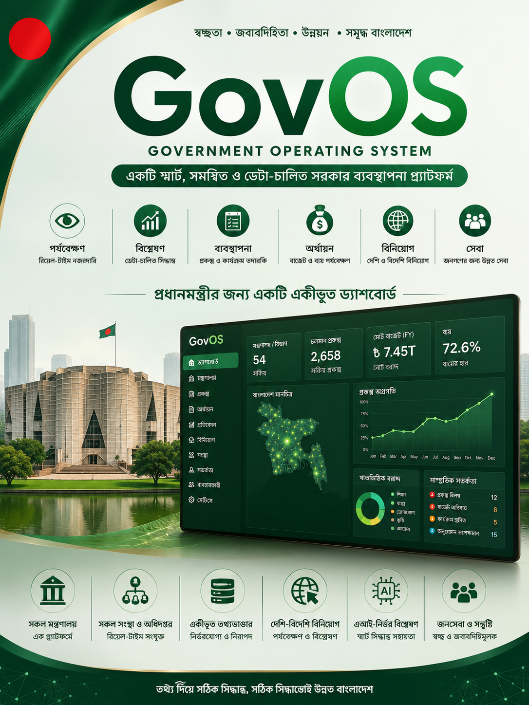
Honourable Prime Minister — every day, the country produces thousands of facts: money spent, projects delayed, schools inspected, floods rising, citizens complaining. Today, those facts arrive late, scattered, and hard to read together.
মাননীয় প্রধানমন্ত্রী — প্রতিদিন দেশে হাজারো তথ্য তৈরি হয়: টাকা খরচ, প্রকল্প বিলম্ব, স্কুল পরিদর্শন, বন্যা, নাগরিক অভিযোগ। আজ সেই তথ্য দেরিতে আসে, ছড়িয়ে থাকে, একসাথে বোঝা কঠিন।
That is GovOS Bangladesh — a proposed Government Operating System. Not a robot that rules. A tool that helps honest, human leadership. The whole project can be completed in 6 months if the Government decides to proceed.
সেটাই গভঅস বাংলাদেশ — প্রস্তাবিত সরকারি অপারেটিং সিস্টেম। শাসনকারী রোবট নয়। সৎ, মানবিক নেতৃত্বকে সাহায্য করার হাতিয়ার। সরকার সিদ্ধান্ত নিলে পুরো প্রকল্প ৬ মাসে সম্পন্ন করা সম্ভব।
Anyone can understand this picture — no computer knowledge needed.
এই ছবি যে কেউ বুঝতে পারবেন — কম্পিউটার জ্ঞানের দরকার নেই।
Think of it like a daily newspaper for the whole government — but live, secure, and only for authorised people.
পুরো সরকারের জন্য দৈনিক পত্রিকার মতো ভাবুন — তবে লাইভ, সুরক্ষিত, এবং শুধু অনুমোদিত ব্যক্তিদের জন্য।
Facts come in from offices & the field
অফিস ও মাঠ থেকে তথ্য আসে
Everything sits in one safe place
সবকিছু এক নিরাপদ জায়গায়
Simple charts + helpful AI summary
সহজ ছক + এআই সারাংশ
4 · Decide — leaders act with confidence ৪ · সিদ্ধান্ত — নেতৃবৃন্দ আত্মবিশ্বাসে পদক্ষেপ নেন
“Which projects are delayed over 6 months, and which ministries overspent this quarter?” — answered from live data. AI helps; leaders decide.
“কোন প্রকল্প ৬ মাসের বেশি বিলম্বিত, এবং কোন মন্ত্রণালয় এই ত্রৈমাসিকে বেশি খরচ করেছে?” — লাইভ তথ্য থেকে উত্তর। এআই সাহায্য করে; সিদ্ধান্ত নেতৃবৃন্দের।
Each box is one part of the system — explained for everyone. Real pictures of these screens come in Part B.
প্রতিটি বাক্স সিস্টেমের এক অংশ — সবার জন্য বোঝানো। এই পর্দাগুলোর আসল ছবি পরবর্তী অংশে (Part B)।
Economy, big projects, alerts — the morning view for the Prime Minister’s desk.
অর্থনীতি, বড় প্রকল্প, সতর্কতা — প্রধানমন্ত্রীর ডেস্কের সকালের দৃশ্য।
How each ministry is doing — progress, money, and problems — without waiting for thick files.
প্রতি মন্ত্রণালয়ের অগ্রগতি, টাকা ও সমস্যা — মোটা ফাইলের অপেক্ষা ছাড়াই।
Where budget is going. Unusual spending lights a warning — early, not after loss.
বাজেট কোথায় যাচ্ছে। অস্বাভাবিক খরচে আগে থেকেই সতর্কতা।
Is work on time? Over budget? Who is the contractor? Easy answers at a glance.
কাজ সময়মতো? বাজেট ছাড়িয়েছে? ঠিকাদার কে? এক নজরে উত্তর।
Risks in buying goods, fake bills, or delayed work are flagged for action.
কেনাকাটা, নকল বিল বা বিলম্বিত কাজে ঝুঁকি চিহ্নিত — পদক্ষেপের জন্য।
Click a district: people, hospitals, flood or dengue risk — geography made simple.
জেলায় ক্লিক: মানুষ, হাসপাতাল, বন্যা বা ডেঙ্গু ঝুঁকি — সহজ মানচিত্র।
Officers send today’s work, expenses and problems from a phone — with location.
কর্মকর্তা মোবাইল থেকে আজকের কাজ, খরচ ও সমস্যা পাঠান — অবস্থানসহ।
“Which projects are late by 6 months?” — the system answers from real data. Humans still decide.
“কোন প্রকল্প ৬ মাস দেরি?” — আসল তথ্য থেকে উত্তর। সিদ্ধান্ত মানুষেরই।
A simple door for people: submit a complaint and track it. Later, more services (licenses, tax help, land info) can grow from the same door.
মানুষের জন্য সহজ দরজা: অভিযোগ জমা ও ট্র্যাক। পরে একই দরজা দিয়ে আরও সেবা বাড়ানো যাবে।
Not everyone sees everything. That keeps the nation safer.
সবাই সবকিছু দেখবেন না। এতে দেশ নিরাপদ থাকে।
Full national view — the whole picture, with security checks.
পূর্ণ জাতীয় দৃশ্য — নিরাপত্তাসহ পুরো ছবি।
Their own ministry’s work, money and projects.
নিজ মন্ত্রণালয়ের কাজ, টাকা ও প্রকল্প।
Day-to-day running and reports for the ministry.
মন্ত্রণালয়ের দৈনন্দিন পরিচালনা ও রিপোর্ট।
Daily tasks, files and local updates.
দৈনিক কাজ, নথি ও স্থানীয় আপডেট।
What is happening in the district.
জেলায় কী ঘটছে।
Send today’s report from the ground.
মাঠ থেকে আজকের প্রতিবেদন পাঠান।
Artificial Intelligence here is like a very fast research assistant. It can summarise, spot strange spending, and answer questions. It does not take final government decisions. Honourable leaders do.
এখানে কৃত্রিম বুদ্ধিমত্তা খুব দ্রুত গবেষণা সহকারীর মতো। সারাংশ দিতে, অদ্ভুত খরচ খুঁজে পেতে, প্রশ্নের উত্তর দিতে পারে। চূড়ান্ত সরকারি সিদ্ধান্ত সে নেয় না। মাননীয় নেতৃবৃন্দ নেন।
Focused team, clear phases, working demo already in hand — so delivery can be fast.
দক্ষ দল, স্পষ্ট ধাপ, হাতে কার্যকরী ডেমো — তাই দ্রুত সম্পন্ন করা যায়।
Who can enter, what each person sees, national + ministry screens, field phone reports.
Budget watch, project tracking, buying risks, GIS map, automatic briefings.
Ask-in-plain-language AI, citizen door, training, security, full handover.
A working bilingual demo already exists (real screens in Part B below). We are not starting from a blank page — we complete, secure, connect, train, and deliver.
দ্বিভাষিক কার্যকরী ডেমো ইতিমধ্যে আছে (নিচে Part B-তে আসল ছবি)। শূন্য থেকে শুরু নয় — সম্পন্ন, সুরক্ষিত, সংযুক্ত, প্রশিক্ষিত ও সরবরাহ।
A system for the Prime Minister’s Office must be as careful as a bank vault. Only the right people see the right pages. Every important action can be recorded. Full national use would follow government security rules and legal protection of citizens’ data.
প্রধানমন্ত্রীর কার্যালয়ের সিস্টেম ব্যাংক ভল্টের মতো সতর্ক হতে হবে। সঠিক ব্যক্তিই সঠিক পাতা দেখবেন। গুরুত্বপূর্ণ কাজ নথিভুক্ত থাকতে পারে। পূর্ণ জাতীয় ব্যবহারে সরকারি নিরাপত্তা নিয়ম ও নাগরিক তথ্যের আইনি সুরক্ষা মানতে হবে।
We speak clearly — because trust matters more than marketing.
আমরা স্পষ্ট বলি — বিপণনের চেয়ে আস্থা বেশি দরকার।
| Point · বিষয় | Truth · সত্য |
|---|---|
| What you can try nowএখন যা দেখা যায় | A working bilingual demo — real screens in Part Bকার্যকরী দ্বিভাষিক ডেমো — Part B-তে আসল পর্দা |
| What it is notএটি যা নয় | Not a finished nationwide system already running in all officesসব অফিসে চালু সম্পূর্ণ জাতীয় সিস্টেম নয় |
| If Government says yesসরকার হ্যাঁ বললে | Full project completed in 6 months — build, secure, train, pilot, handover৬ মাসে পূর্ণ প্রকল্প সম্পন্ন — নির্মাণ, নিরাপত্তা, প্রশিক্ষণ, পাইলট, হস্তান্তর |
Real pictures from the working demo (captured from the actual software). কার্যকরী ডেমোর আসল ছবি (সফটওয়্যারের পর্দা থেকে তোলা)।
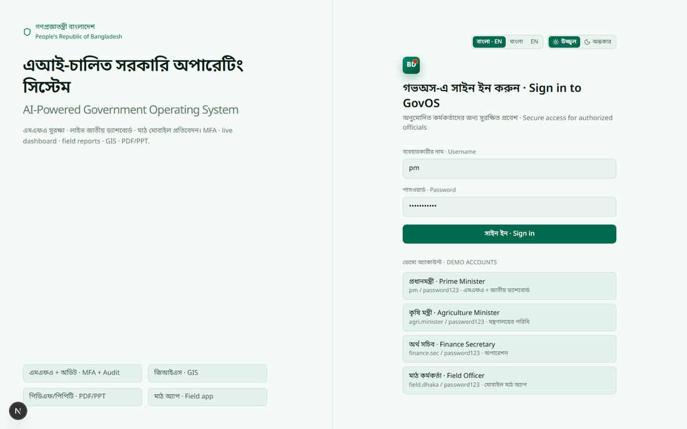
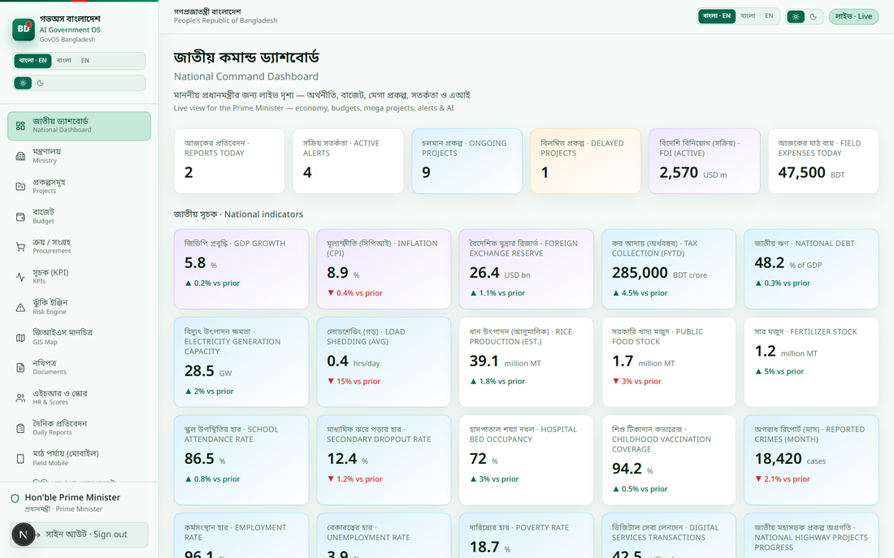
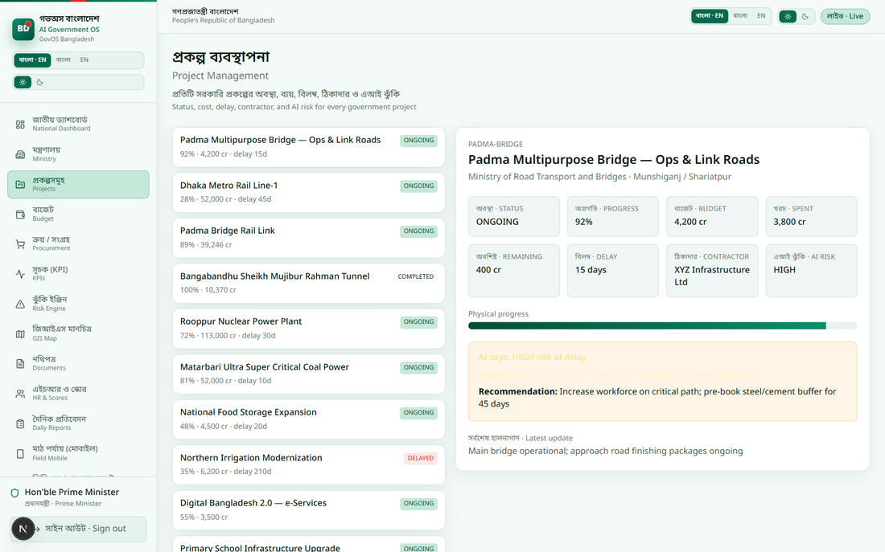
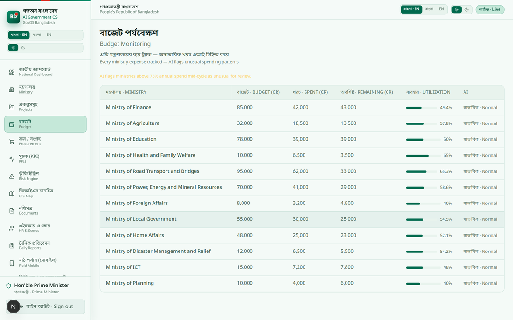
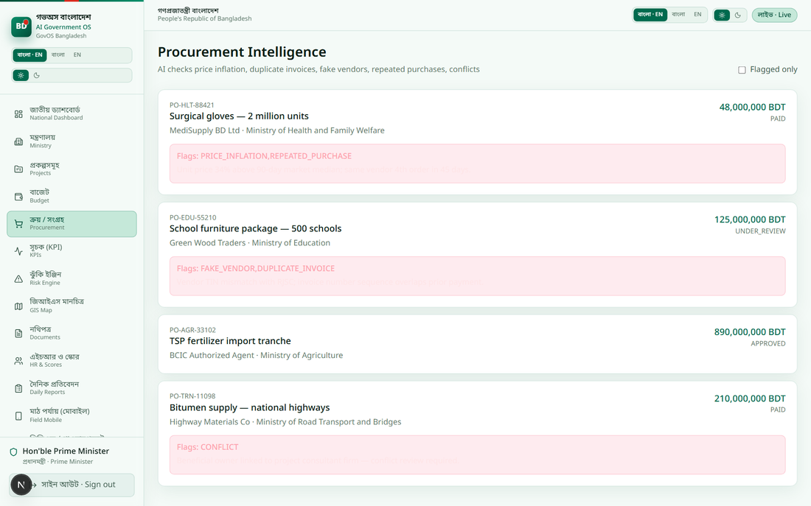
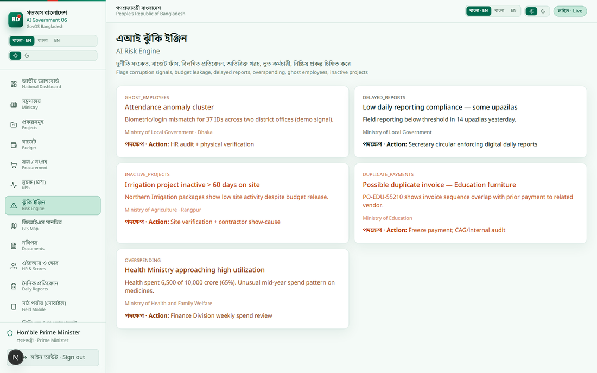
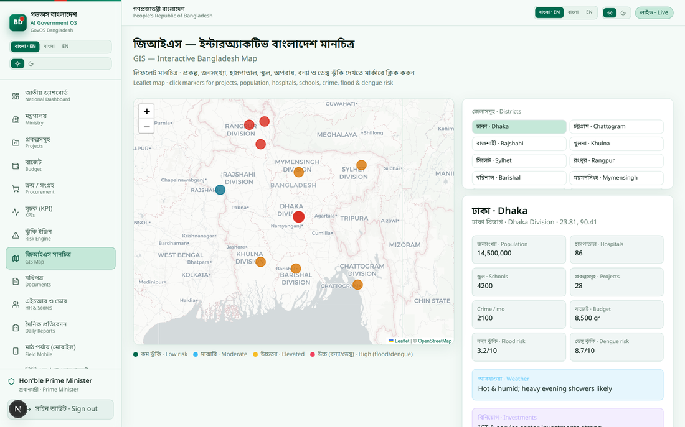
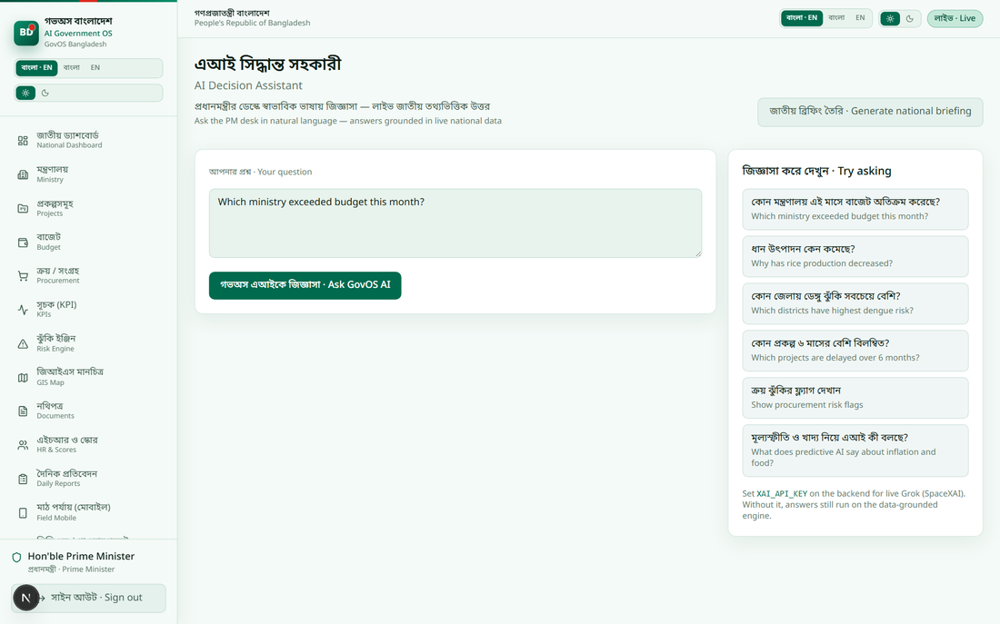
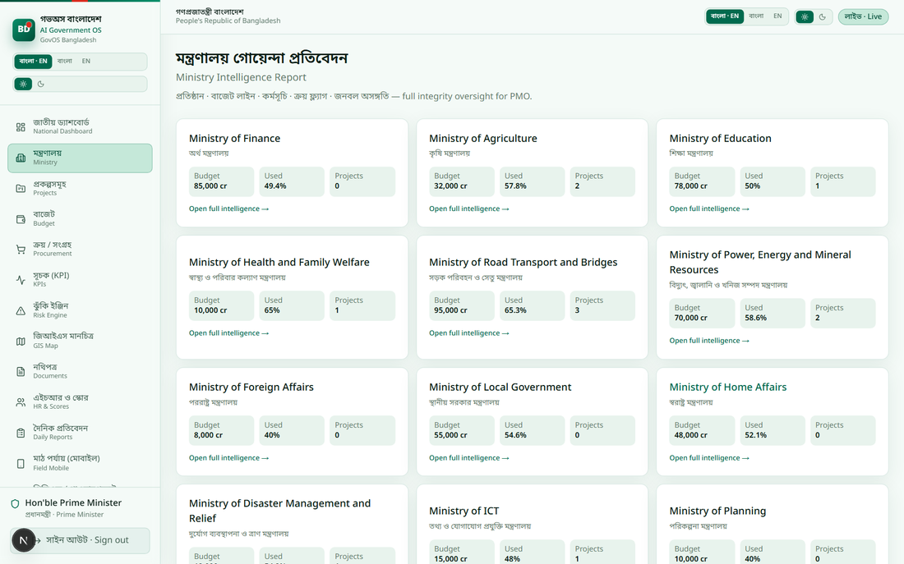
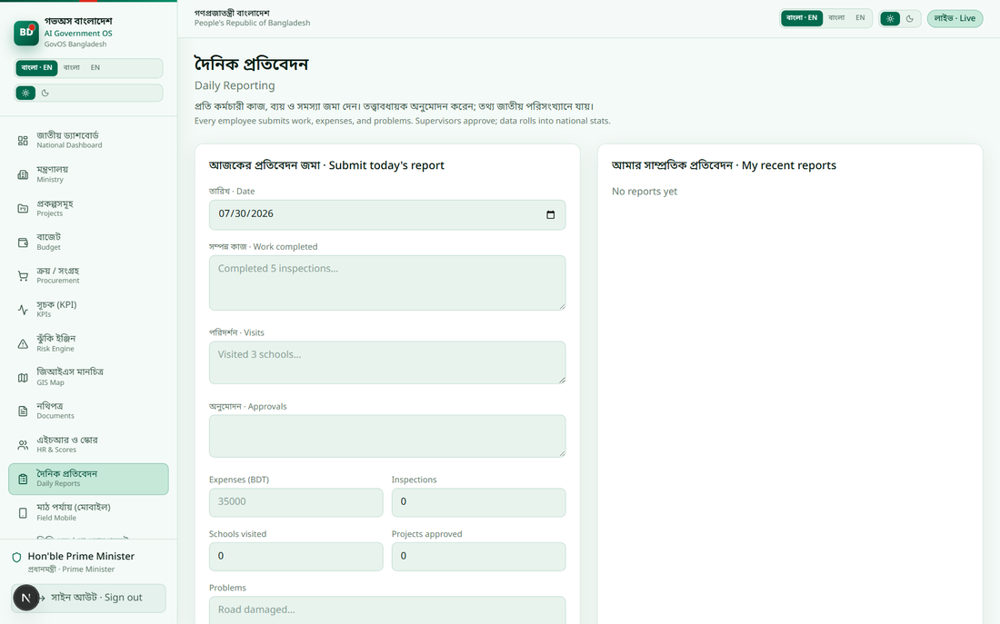
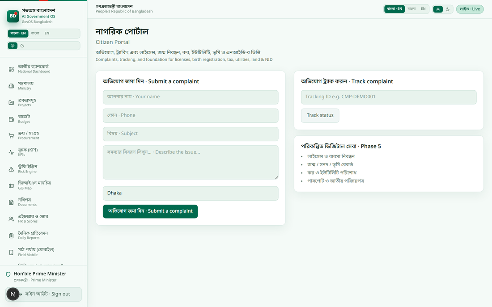
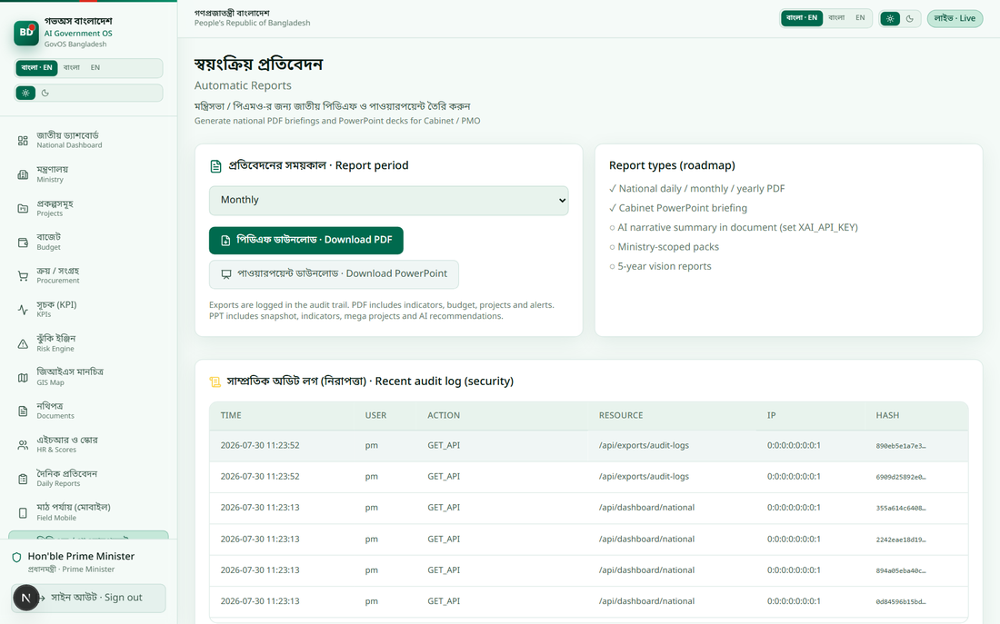
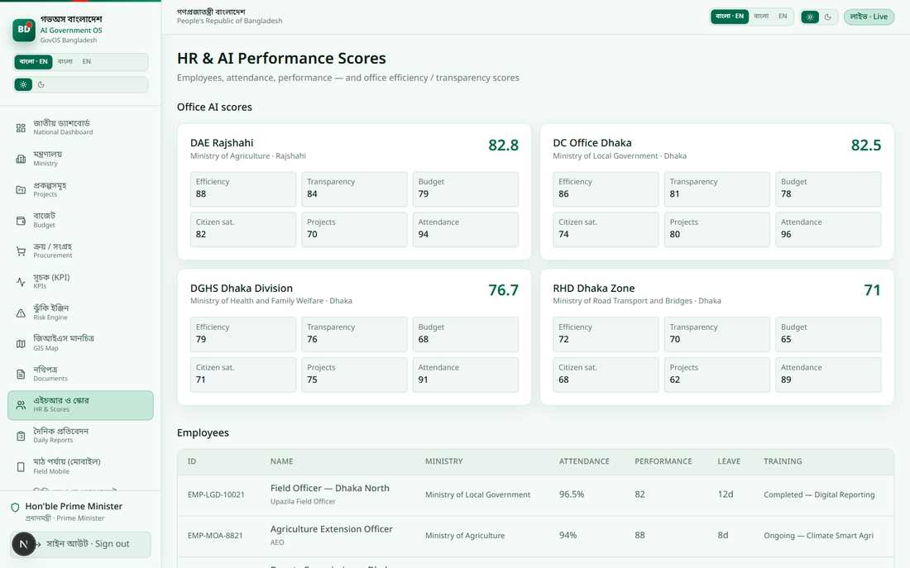
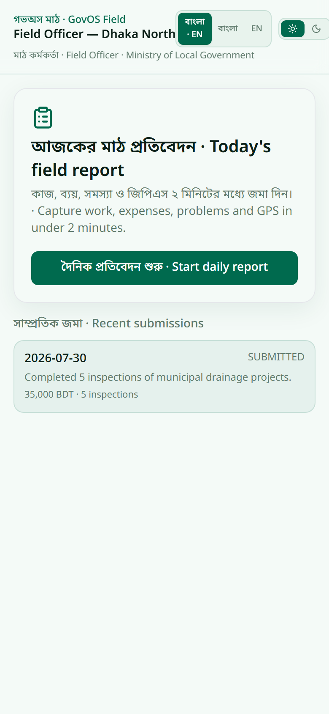
This is a respectful proposal to the Government of Bangladesh. Part A explains the idea simply. Part B shows real working screens. The finished, secure, trained system can be delivered within six months if the Honourable Government decides to move forward.
এটি বাংলাদেশ সরকারের প্রতি শ্রদ্ধাশীল প্রস্তাব। Part A ধারণা সহজে বোঝায়। Part B আসল কাজ করা পর্দা দেখায়। মাননীয় সরকার এগোতে চাইলে সম্পূর্ণ, নিরাপদ, প্রশিক্ষিত সিস্টেম ছয় মাসের মধ্যে সরবরাহ করা সম্ভব।